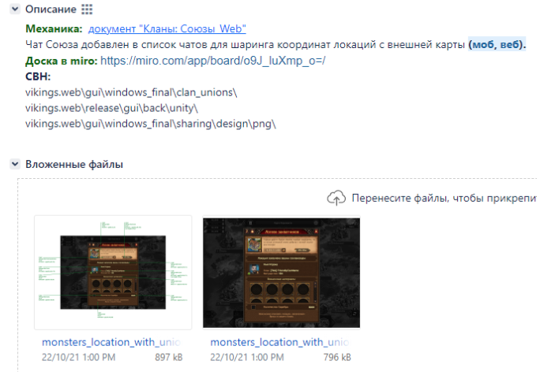
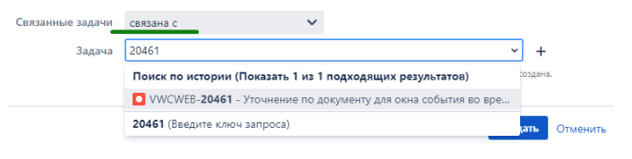
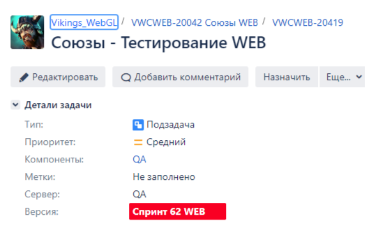
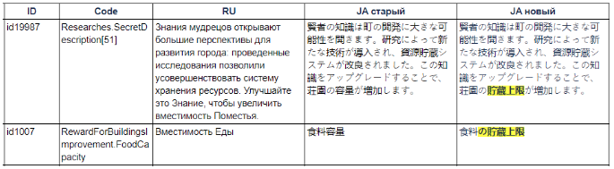
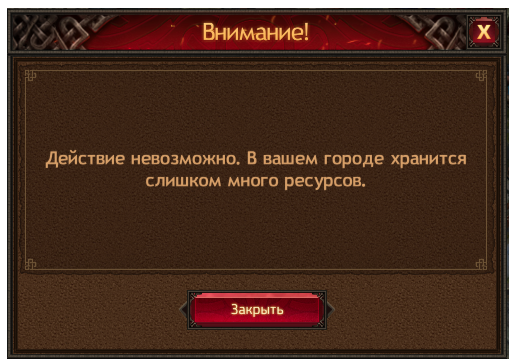

Помощь новеньким (полотно)
Цели:
Цель документа - помочь новобранцам поскорее влиться в рабочий процесс и не оказаться в ситуации когда
не знаешь куда бежать и что делать.
При этом в дальнейшем никто не запрещает тебе применять методы и навыки, которыми владеешь ты – документ
ни коем образом не ограничивает тебя.
заголовок h3
На проекты Викинги и Трон приходит большое количество разнообразных задач. Это
проверка
самих фич, документации, дизайна окон, проверка текстов и локализации, балансовые проверки, сервер,
проверка звука, различные проверки арта и тд. Далее в этом документе для некоторых категорий задач будут
описаны основные правила, по которым мы проводим проверки.
Ниже указаны задачи, на которые мы тратим больше всего времени:
к оглавлению
Задачи на дизайн это задачи, в которых надо проверить.......
Задачи на дизайн окон приходят, как правило, с прикрепленной ссылкой на документ, в котором описан
функционал по окнам, а также макеты.

пример задачи на дизайн
С чего начать?
- Открываем макет окна из задачи
- Находим его описание в документе
- Проверяем чтобы макет соответствовал документу
- Далее сравниваем расположение элементов окна, их размеры, шрифты и т.д.
При проверке макетов с игрой необходимо брать документ и проверять все по нему. Проверять эту часть
документа нужно
тщательно, в том числе с негативными сценариями. Эта задача полностью на тебе (макет, текста, механика,
юзабилити и т.д.)
В случае если есть противоречия макета с документом,
неоднозначность написанного в документе - необходимо уточнять это в виде бага у UI/UX отдела.
Если в
процессе проверки ты обнаружил, что у тебя не хватает макета какого либо окна и непонятно как оно должно
выглядеть, то это повод оформить баг. Например, стандартный ворнинг понятно как выглядит - в нем лишь
текст меняется, но вот добавление какого либо элемента (иконки, плашки) не совсем понятно хотя бы потому
что неясен размер, расположение, цвет и т.д.
Есть случай когда необходимо завести баг одновременно на
два проекта. На веб и на мобильную версию. Когда же? Когда есть вопрос по документу и существует
вероятность изменения документа или окна на обоих проектах. Это делается для того, чтобы не было
ситуации, когда на одном проекте одна механика, а на другом – другая, потому что каким-то образом
забыли актуализировать документ на одном из проектов. Причем, даже твое небольшое сомнение может
перерасти в существенные изменения в
игре. Баги связываем между собой (В Jira выбираем
“связана с ”):

Бывает, что макеты обновляются уже после того, как задача была передана на проверку. Актуальные макеты
ты найдешь в других задачах на дизайн (часто название начинается на "Доработка…") или в SVN, обновив его
содержимое
к оглавлению
Глобальные фичи это ........

Первое с чего мы начинаем тестирование глобальных фич и небольших фич – вычитка и тестирование
документации. Если фича еще в стадии разработки, то при тестировании документации мы оставляем
комментарии на все непонятные моменты. Ответы на них могут сильно поменять функционал и вовремя заданный
вопрос может сэкономить кучу времени и сил при разработке и тестировании.
После того как фичу отдают на проверку - по всем неясным моментам в документе и в игре комментарии мы не
оставляем, а заводим баги на UI/UX.
Глобальные фичи в идеале пройти хотя бы два раза по документу. Внимательно вчитываемся в каждую строчку
документа и сравниваем с тем, как реализовано в игре. Не следует пропускать какие-то неприятные для
проверки части документа (например, нужна помощь серверных программистов, отдела контента и т.д.) и
оставлять их на
потом, т.к. это все равно нужно проверить, а в конце может оказаться слишком много всего и ты просто
забудешь/не успеешь проверить. Также не следует смотреть одним глазком на что-то очень простое с
мыслями:
- ну это итак понятно;
- по моему я видел как это реализовано, там все так и было, ошибок не падало тоже;
- это просто в реализации - там ошибок не будет;
- кто-то до меня это точно проверил;
- кто-то обязательно это проверит потом, ведь они тут все давно работают, опытные, все знают.... (и еще
куча приятных комплиментов в адрес коллег)
В первый раз мы проходим каждую строчку документа используя позитивные и простые негативные сценарии.
При втором проходе смотрим больше негативные сценарии. Таким образом мы охватываем и позитивные, и
негативные сценарии и заодно
перепроверяем, что ничего не сломано в результате фиксов других багов. Не всегда у нас есть время проверять
2-3 раза документ, поэтому приходится совмещать все виды тестирования - здесь уже важен твой опыт, умение
распределить время, расставить верно приоритеты.
Когда фича большая и несколько человек на ее проверке, то в первую очередь старайся проверять ту часть,
которую еще никто не трогал. Найди относительно независимый раздел ближе к середине документа и
проверяй его. Таким образом ты с коллегами в сумме покроешь проверками весь документ
раньше, чем если бы все стали проверять весь документ с самого начала.
Этот метод, но уже более
формализовано применяется, когда мы ограничены во времени и каждый не успеет пройти документ полностью
от начала до конца – поэтому сотрудник тщательно проверяет отмеченную для него часть документа.
Важно! Если баг может затронуть изменение документации на другом проекте, то необходимо завести баг
на обоих проектах, связав их между собой
к оглавлению
При проверках этих задач.....
Как правило, задачи делятся на “Ru, En…..” и “For….”. Делается это для ускорения начала проверки фич. For
доделывают чуть позже, а в это время у нас есть возможность проверки функционала и сборки окон, имея Ru
и EN локали.

При проверках все просто – находите текст в игре и сравниваете с тем, что в задаче (в этом и сложность
:-)). Если текст из новой фичи, то он пишется с нуля, следовательно, должен быть готов функционал для
этого текста - собрано окно. Если окно не собрано, то надо проверить статус задачи для этого окна и
подождать при необходимости, когда окно соберут. Если текст из старого функционала и его по какой то
причине редактируют, то его нужно найти, чтобы проверить и тут могут возникнуть варианты:
- Текст существует в игре и его можно найти используя свои знания по проекту, код текста, логику и
т.д.

- Текст ты нашел, но он не совсем такой или заменен частично на некоторых локалях. Ищем информацию в
комментариях и в связанной задаче на другом проекте. Нам нужно понять тот ли это текст и актуален
ли он. Если инфы в комментариях нет, то убедиться, что это именно нужный нам текст можно в
настройках игры, выбрав язык «Technical language» и сравнив их айди. Если ты текст в верном месте
смотришь, то нужно по коду или id текста в задаче найти его в специальном файле, который
обновляется по средам и пятницам. Если файл обновлен после того, как был написан текст в задаче, то
скорее всего именно в файле актуальный текст (при отсутствии новых задач на изменение текста). Зная
id или код текста ты также можешь поискать его в
задачах или багах и там будет актуальный текст.
- Текст тяжело найти или он не используется. Пытаемся найти, используя все свои знания, смотрим в
нашей и связанной задаче баги, подсказки или комментарии. Спрашиваем коллег из нашего
отдела, в первую очередь тех, кто уже проверил или проверяет такую же задачу на другом проекте.
Вопросы должны закончиться. Если нет, то далее спрашиваем руководителя и с его согласия обращаемся к
коллегам из контента и к клиентским программистам. Как только пришли к какому то выводу, оставляем
комментарий, чтобы упростить жизнь коллегам и сохранить их драгоценное время.
При необходимости проверить ворнинги на всех локалях, которые трудно воспроизводятся, можно получив их в
игре без читов на любой локали, т.е. убедиться что
текст и механика корректны. Затем переключиться в настройках на нужную локаль, ввести чит show_warning
1x, где x - id ворнинга.
Важно! Крайне желательно получать текста в ручную, особенно если это
свежий функционал.

Также есть и другие читы для проверки текста. Используй их, если других способов найти текст не осталось:
lang y - Отображает алерт, в теле которого текст, id которого был введен в чит.Текст выводится в
зависимости от локализации игры.
push id х параметр;параметр- Отображает пуш-сообщение, где х - время до отображения пуша в секундах id -
id пуш-сообщения параметр;параметр - параметры, содержащиеся в пуш-сообщении (текст или число).
langpanel - Дает возможность сменить локализацию в открытом окне на лету, без перезагрузки клиента. При
применении добавляет в ui кнопки локализаций, и при повторном применении - удаляет. В веб добавлена
кнопка LS возле кнопки открытия чит-панели. Но работает только для уникальных текстов
set_task x - x = id задания - заменить названия всех заданий во всех категориях на название указанного
задания, x = 0 - вернуть прежние названия заданий
Со временем будет понятно как действовать в каждом случае, порядок поисков может быть разный. Также не
забывай заводить баги, если увидишь что текст где- то не помещается в отведенном ему месте. Например, на
немецкой локали, кроме тебя этот баг скорее всего никто не заметит.
к оглавлению
Задачи на баланс - все что связано с цифрами, зависимостями и т.д
Как правило, задачи делятся на “Ru, En…..” и “For….”. Делается это для ускорения начала проверки фич. For
доделывают чуть позже, а в это время у нас есть возможность проверки функционала и сборки окон, имея Ru
и EN локали.